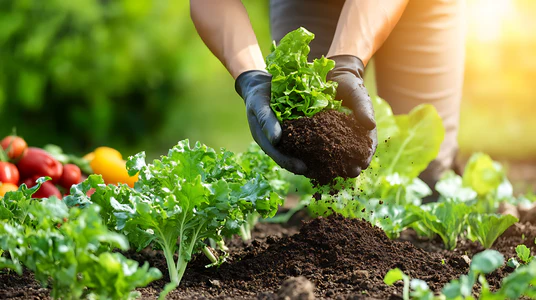
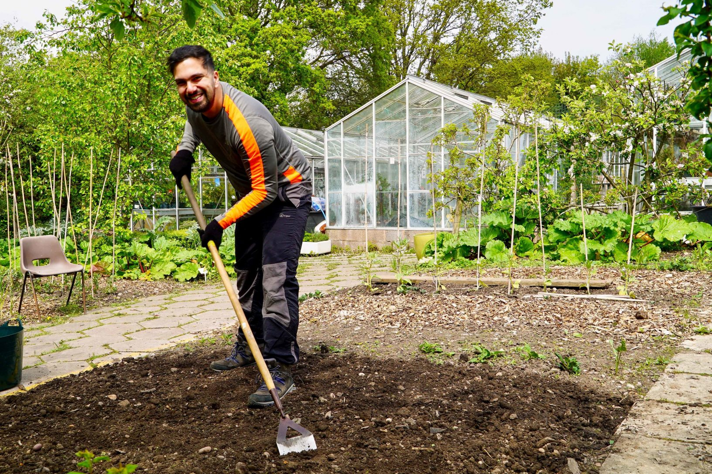
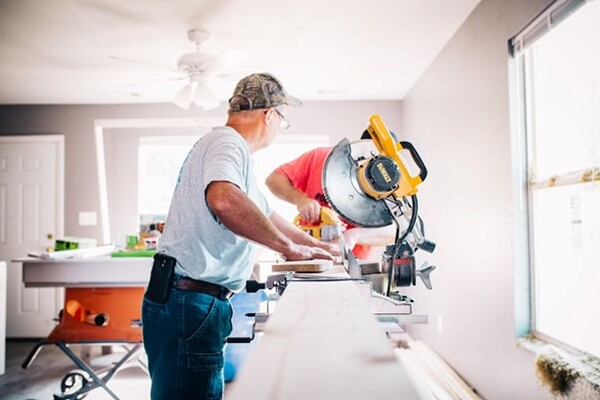

Hakkımızda
Biz, GreenStone Services, ev ve iş yerlerinizin bahçe bakımı, tamirat ve tadilat ihtiyaçlarını kaliteli ve güvenilir bir şekilde karşılayan bir ekibiz. Müşterilerimizin yaşam alanlarını hem estetik hem de fonksiyonel olarak geliştirmeyi kendimize görev edindik.
Misyonumuz, her projede müşteri memnuniyetini ön planda tutarak, yaşam alanlarını güzelleştirmek ve her işimizi titizlikle tamamlamaktır. İster küçük bir bahçe düzenlemesi, ister kapsamlı bir tadilat olsun, her adımda profesyonel hizmet sunuyoruz.
Vizyonumuz, GreenStone Services’i bahçeden ev tadilatına kadar her türlü bakım ve onarımda Türkiye’nin en güvenilir ve tercih edilen hizmet sağlayıcısı haline getirmektir.
GreenStone Services, 2015 yılında İstanbul'da küçük bir ekip olarak kuruldu. Kurucularımız, hem doğayı hem de yaşam alanlarını seven bir anlayışla işe başladı. İlk günlerden itibaren kalite ve güveni öncelik olarak belirledik. Bugün, deneyimli profesyonellerden oluşan ekibimizle, müşterilerimizin ev ve iş yerlerinde yaptığımız işler sayesinde sayısız mutlu müşteri kazandık. Her proje bizim için yeni bir meydan okuma, her başarı ise yeni bir gurur kaynağıdır.


